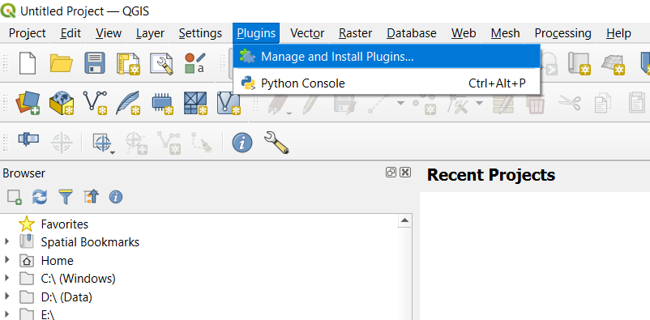
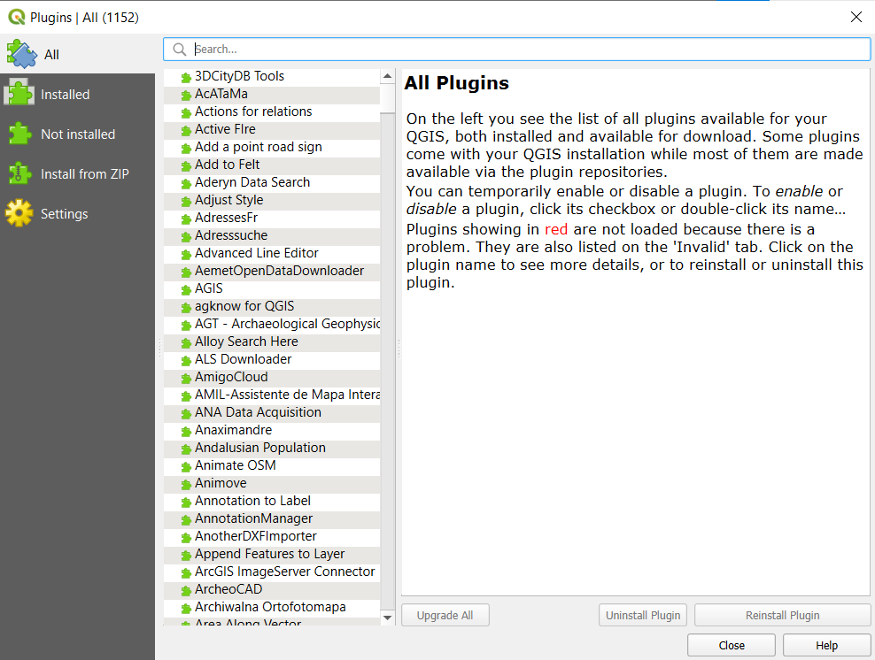
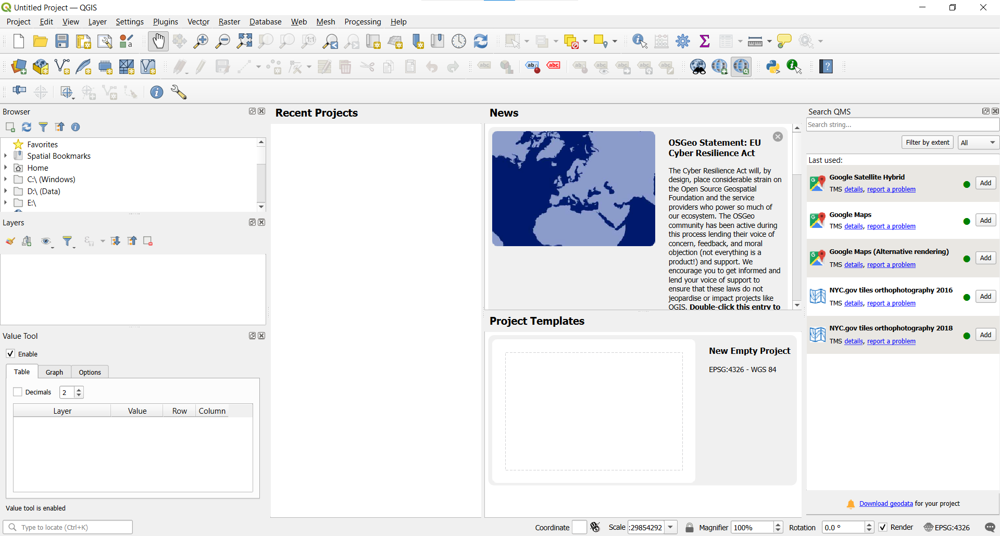
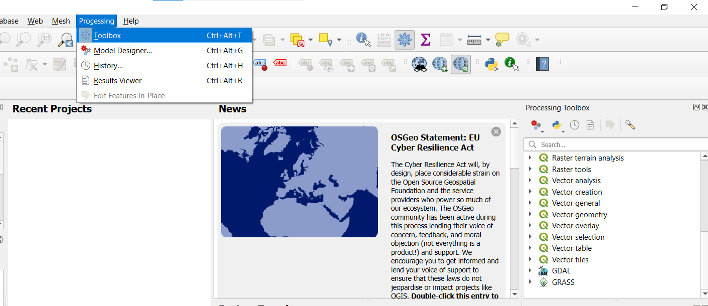

1 Installing QGIS and Plugins
1.1 Download and Install QGIS
Downloads of QGIS for Windows and MacOS, as well as instructions for installing on other environments (linux, mobile) are available from the downloads page of the QGIS website. When users go to the QGIS downloads page, they should generally see the download options relevant to their operating system. Windows and MacOS should be able to run the installer that downloads for the selected version and be able to get going (but see any notes on the download page); Linux users should review the instructions available for their specific Linux distribution.
1.1.1 Available Versions
At the time of this writing, there are two versions of QGIS readily available, and this general model is how it tends to be set up:
- Latest Release, version 3.34, available from the Green Button - this may have some newer features added;
- Long Term Release (“LTR”), version 3.28, in the link directly below the green button - long term releases are maintained with bug-fixes, but not generally new features for 3 release cycles, to focus on stability.
This tutorial was developed using 3.34, but either version should generally work. (Releases are denoted as x.y.z, where changes in ‘x’ denotes some potentially larger changes in the software, changes in ‘y’ denote additions of features and bug fixes, and changes in ‘z’ generally reflect bug-fixes.)
Should users need older or development releases for any reason, they can access those through the “All Releases” tab on the webpage.
Note: Windows users will also notice another download option for the OSGeo4W Installer, associated with a compass rose icon - this is an installer that supports more customization of the installation - advanced users may find this useful, for example to install development versions of the software or specific versions of the libraries QGIS depends on.
1.2 Starting QGIS and Installing Plugins
Once QGIS is installed, users should be able to go to their start menu, desktop, or similar to find it and use the typical approach for starting software on their operating system.
1.2.1 Plugins
As with many software packages, QGIS supports plugins - or basically additional tools that can be written for the software to extend functionality. There are hundreds of plugins available, all freely available. To view and manage plugins, go to the Plugins menu at the top and navigate to Manage and install plugins

The The following dialogue box will open, allowing users to browse through or search available plugins, and then by using the tabs on the left, seeing what plugins are installed and so-forth.

This tutorial makes use of the following plugins:
- Value Tool
- QuickMapServices
To install the plugins, you can you can click the “Install Plugin” button that will appear when you select plugins from the list. Once plugins are installed, you can use the checkboxes that appear alongside those to enable or disable them; as plugins are installed, some may result in a new window being shown automatically, or a new “panel” available from the View menu; some may result in new icons appearing in the toolbar, a new menu being available at the top of the QGIS window.
1.3 Basic Navigation in QGIS
When you open QGIS, you should see a window like the following.

The labeled “sub-windows” you see, such as for the Browser, Layers, Value Tool and so forth are referred to as panels and the rows of icons across the top are toolbars. You can adjust what you are seeing in terms of panels and toolbars by going to the View menu a the top of the QGIS window, and selecting Panels or Toolbars appropriately (right-clicking on the toolbar also lets you see and turn on/off the panels and toolbars). Some icons may seem fairly intuitive, such as to zoom in ( ) or zoom out (
) or zoom out ( ), but others may not be, so explore and don’t be afraid to try things out! It’s generally helpful to do this with smaller datasets loaded into QGIS to help iterate through the different tools and options more quickly.
), but others may not be, so explore and don’t be afraid to try things out! It’s generally helpful to do this with smaller datasets loaded into QGIS to help iterate through the different tools and options more quickly.
I strongly encourage users to explore QGIS to familiarize themselves a bit with the software - hover your mouse over icons to see what they say, click on menu items at the top and browse around, selecting through some different menus and such. QGIS is rich in functionality, with multiple ways to do many things, so this can help you figure out what the easiest ways are for you to approach workflows.
1.3.1 Some initial setup
User may develop their own preferred ways of customizing things with any software. Here are two initial things I like to do for QGIS:
- Delineate “Favorites” in the Browser panel:
- The Browser panel is a bit of a “one-stop-shop” to navigate around your local file system and load various types of layers.
- If you navigate around the directories from within the Browser panel (expand what you see by clicking on the right-facing arrow to the left of a given name), you can right-click folders and select them as “Favorites.” If you keep files with data you use in some general locations, this can help save time to get to them - particularly if the data are several folders deep or something.
- Make the “Processing Toolbox” panel visible:
- In QGIS, there are many tools accessible through the toolbars and menus at the top. The panel for the Processing Toolbox serves as a bit of a directory of all of the different tools that exist in QGIS.
- You can make this panel active either by going through the
Viewmenu ->Panels, or by clicking theProcessingmenu at the top and clicking on “Processing Toolbox.”- The screenshot below shows what this looks like (with the Processing Toolbox panel active). The Processing Toolbox has been scrolled down to show GDAL and GRASS - these are two software packages installed with QGIS and accessible through the Processing Toolbox. (GDAL is the core software in QGIS generally underlying import/export operations, and with additional functionality available for various processing steps). 
Depending on what you are doing at a given time, you can “x” out of individual panels and then re-instantiate them using View -> Panels and you can resize them, pop them out, etc. by clicking on the top of each panel (at about the same area where the panel name is) and dragging it as desired.